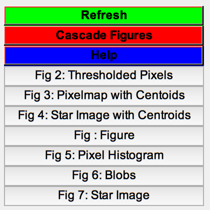

Contents
Sample Image Generation script
Test image generation using PSF integration with noise, for fixed centroid locations. Apply Poisson noise to the clean, simulated image and blobify. Verify the image histogram.
See also IntegratePSFs, RHSGaussianPSF, PoissonNoise, ApplyThreshold, Blobify
%-------------------------------------------------------------------------- % Copyright (c) 2018 Princeton Satellite Systems, Inc. % All rights reserved. %-------------------------------------------------------------------------- % Since version 2018.1 %--------------------------------------------------------------------------
Integrate the PSFs
d = IntegratePSFs; d.n = 64; % pixels d.m = 64; d.xPixel = 20; % microns d.yPixel = 20; d.funData.sigma = 15; % microns d.funPSF = @RHSGaussianPSF; x0 = [5.5 11.5 26.5 19.2 8.4 44.0 52.01 18.3]; % pixels y0 = [5.5 11.5 44.1 16.1 19.3 52.1 22.00 62.6]; d.rPSF = [x0*d.xPixel;... y0*d.yPixel]; % microns d.iPSF = [41 4 33 22 16 50 15 14]*1e3/(2*pi*d.funData.sigma^2); nPix = 4; % number of pixels from center to integrate [pClean, iC] = IntegratePSFs( d, nPix );
Add and verify noise
Add Poisson noise; default is 5% of max pixel count
[pNoise,f,b0] = PoissonNoise( pClean ); % View the histogram to check for a nice Gaussian figure('Name','Pixel Histogram') histogram(pNoise(:),'BinMethod','integer'); grid on

Threshold the image
Threshold the image using a Gaussian fit to the noise floor
[pThresh,b,T] = ApplyThreshold(pNoise);
Blobify
tic blobs = Blobify(pThresh); toc DrawBlobs(blobs,pNoise) figure('Name','Star Image','position',[100 100 1100 300]) h = subplot(1,3,1); imagesc(pClean,'parent',h); axis equal; title('ImagerPSF Output') h = subplot(1,3,2); imagesc(pNoise,'parent',h); axis equal; title('Imager with Noise') h = subplot(1,3,3); imagesc(pThresh,'parent',h); axis equal; title('Thresholded Image') Figui; %--------------------------------------
Blob combine operations: 0
Elapsed time is 0.018227 seconds.
ans =
Figure (6: Blobs) with properties:
Number: 6
Name: 'Blobs'
Color: [0.94 0.94 0.94]
Position: [560 528 560 420]
Units: 'pixels'
Use GET to show all properties
